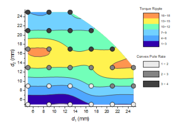

等高線：カテゴリーZ
Contour-Categorical
- 
要求されるデータ
- 少なくとも1つのZ列（あるいは、その部分領域）を選択します。Z列に結びついたXY列がある場合、そのXY列が使われます。そうでない場合、ワークシートのデフォルトのXY値が使われます。
- または
- ワークシートセルのブロック（仮想行列）を選択します。
グラフ作成
- 行列シートをアクティブにするか必要なデータをワークシート上で選択します。
- メニューから「」を選択します。
カラーマップ等高線の作成および編集についての詳細は、3Dおよび等高線図の章をご覧ください。
テンプレート
TRICONTOUR_CATEGORICAL.OTPU
ノート